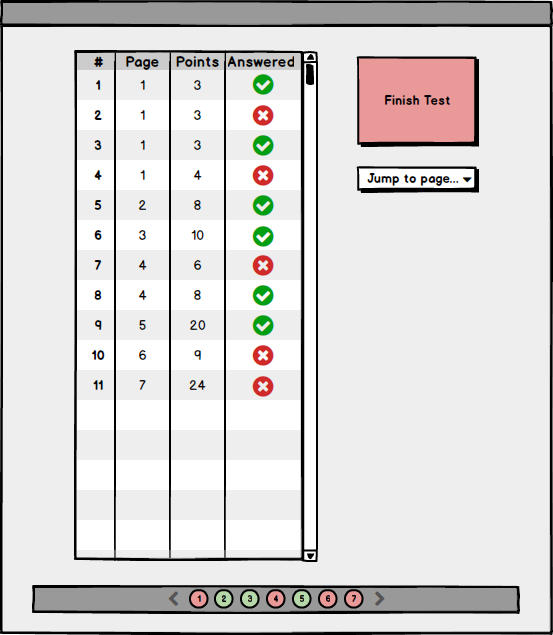
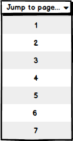
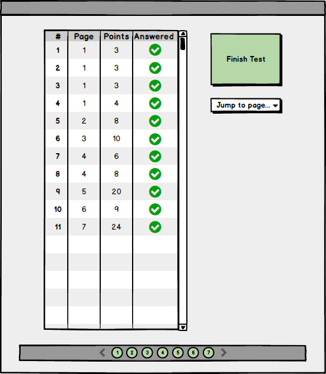

The scenario in this section describes the steps a user takes to finish taking a test and submitting their final answers to the test. This scenario continues where the previous scenario left off.
The user clicks on the 'next page' arrow at the bottom of the screen from the last page of the test view. The system responds by displaying a dialog for reviewing the user's test submission.

Figure 0: The review test submission dialog with some questions missing responses.
The dialog displays a table with entries for every question on the test. Each question is listed with it's number, the page it can be found on, the number of points it is worth, and either a green check or red cross depending on whether the question has or has not been responded to. The button labeled 'Finish Test' is colored red, signifying that there are still some questions on the test that the user must respond to.
The user clicks on the 'Jump to page' button. The system responds by displaying a list of test pages.

Figure 1: Jump to page menu.
The user can use this menu to quickly jump between pages of the test in order to respond to the remaining questions on the test.
The user continues to answer questions on the test until all test questions have been responded to. The system responds by updating the review test submission dialog.

Figure 2: The review test submission dialog with all questions responded to.
Each question listing now has a green check-mark next to it, and the button labelled 'Finish Test' is now colored green, signifying that there are no test questions remaining that have yet to be responded to.
The user clicks on the 'Finish Test' button. The system responds by collecting their responses and adding a new test submission (associated with the taken assignment) to the course database.
{kind=link}